Lecture 8 - Graphs
- Graph fundamentals
- Graph implementation
- Depth-first search
- Breadth-first search
- Directed graphs
Graphs
- A graph is a pair (V, E), where
- V is a set of nodes, called vertices
- E is a collection of pairs of vertices, called edges
- Both vertices and edges can be thought of as positions and may store elements
- Similar to a binary tree, is an object that might have pointers to other objects
- might have an identifier 'g' for example, with other data underneath etc
Example
- Vertex represents an airport and stores the airport code
- Edge represents a flight route between two airports and stores distance of the route
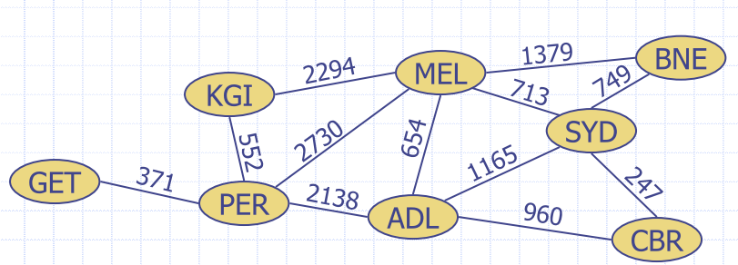
Edge types
- Undirected edge
- unordered pair of vertices (u,v)
- e.g. a flight route
- Undirected graph
- all the edges are undirected
- e.g. flight route network
- Directed edge
- ordered pair of vertices (u,v)
- first vertex u is the origin
- second vertex v is the destination
- e.g. a flight
- Directed graph
- all the edges are directed
- e.g. flight network
Might want to have a directed edge (can go in one direction, but can't go back)
- sometime edges have direction
- If it consists entirely with no directions, then undirected graph
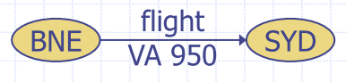
Terminology
-
End vertices (or endpoints) of an edge
- U and V are endpoints of
a
- U and V are endpoints of
-
Edges incident on a vertex
- a, d, and b are incident on V
-
Adjacent vertices
- U and V are adjacent
- connected by a vertix
- U and V are adjacent
-
Degree of a vertex
- X has degree 5 (number of edges connected to a vertex)
- Could have indegree and outdegree if directed
- indegree, how many edges are coming into the node
- outdegree, how many edges outbound from the node
-
Parallel edges
- h and i are parallel edges
-
Self-loop
- j is a self-loop
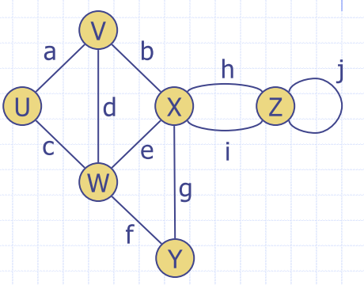
More terminology
- Path
- sequence of alternating vertices and edges
- begins with a vertex
- ends with a vertex
- each edge is preceded and followed by its endpoints
- Simple path
- all vertices and edges are distinct
- Examples
- is a simple path
- is not a simple path
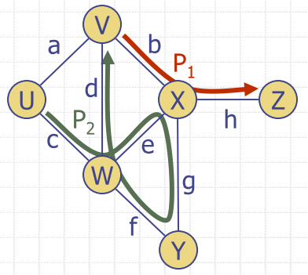
More terminology
- Cycle
- path that starts and ends on the same vertex
- Simple cycle
- all vertices are distinct, except the first and last
- all edges are distinct
- Examples
-
- a simple cycle
-
- not a simple cycle
-
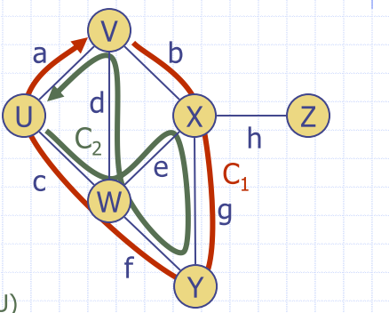
Subgraphs
- Subgraph S of a graph G is a graph such that
- vertices of S are a subset of the vertices of G
- edges of S are a subset of the edges of G
- Spanning subgraph of G is a subgraph that contains all the vertices of G
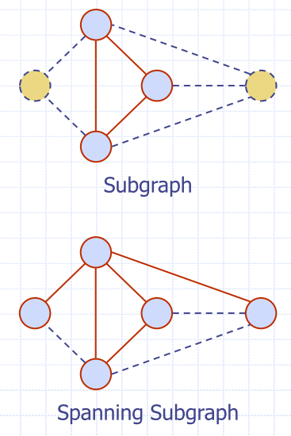
Connectivity
- Graph is connected if there is a simple path between every pair of vertices
- Connected component of a graph G is a connected subgraph of G
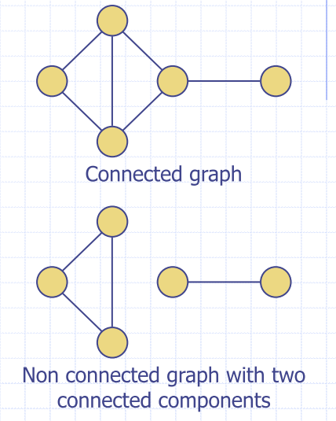
Trees and Forests
- Undirected graph T is an unrooted tree if
- T is connected
- T has no simple cycles
- An undirected graph is a forest if it contains no simple cycles
- If you have graphs are disconnected and you want to check a component, you need to check every disconnected graph you haven't checked
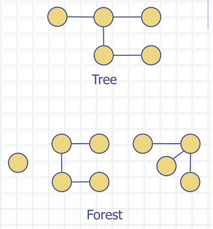
Spanning Trees and Forests
- Spanning tree of a connected graph is a spanning subgraph that is a tree
- Spanning forest of a graph is a spanning subgraph that is a forest
- dropped edges, no longer have cycles anymore
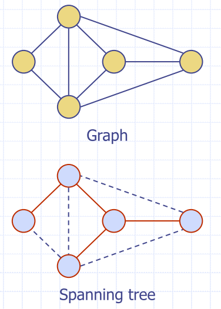
Notation
- in an undirected graph with no self-loops and no multiple edges
- number of vertices
- number of edges
- deg() degree of vertex
- We count each edge twice, i.e.
Graph Density
- Undirected simple graph
- Directed simple graph
- Maximum density is 1
- Minimum density is 0
- Sparse
- Dense
Graph implementation - vertex and edge ADTs
- Graph is a collection of vertices and edges
- Model the abstraction as a combination of three data types: Vertex, Edge and Graph
- Vertex is a lightweight object that stores an arbitrary element provided by the user (e.g. an airport code)
element()method retrieves stored element
- Edge stores an associated object (e.g. a flight number, travel distance, cost)
- retrieved with
element()
- retrieved with
Graph ADT
| function | Description |
|---|---|
numvertices |
Returns the number of vertices in the graph |
vertices() |
Returns an iteration of all the vertices of the graph |
numEdges() |
Returns the number of edges in the path |
edges() |
returns an iteration of all the edges of the graph |
getEdge(u,v) |
Returns the edge from vertex to verte if one exists, otherwise return null. |
endVertices(e) |
Returns an array containing the two endpoint vertices of edge . IOf the graph is directed, the first vertex is the origin and the second is the destination |
opposite(v, e) |
For edge incident to vertex , returns the other vertex of the edge. An error occurs if is not incident to . |
outDegree(v) |
Returns the number of outgoing endes from vertex . |
inDegree(v) |
Returns the number of incvoming edges to vertex |
outgoingEdges(v) |
Returns an iteration of all outgoing edges from vertex v |
incomingEdges(v) |
Returns an iterations of all incoming edges to vertex |
insertEdge(u, v, x) |
Creates and returns a new Vertex storing element . |
removeVertex(v) |
Removes vertex and all its incident edges from the graph. |
removeEdge(e) |
Removes edge from the graph |
Edge list
- Sequence of edges
- represented by vertex pairs Edge List (image below) (1,2) (1,3) (3,0) (0,2)
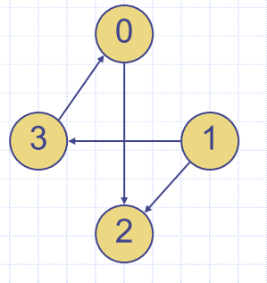
Edge list Structure
- Vertex object
- element
- reference to position in vertex sequence
- have to add this into a map, etc.
- Edge object
- element
- origin vertex object
- destination vertex object
- reference to position in edge sequence
- Going to store weight in object
- going to hold pointers to the vertices it is referring to
- Vertex sequence
- sequence of vertex objects
- Edge sequence
- sequence of edge objects
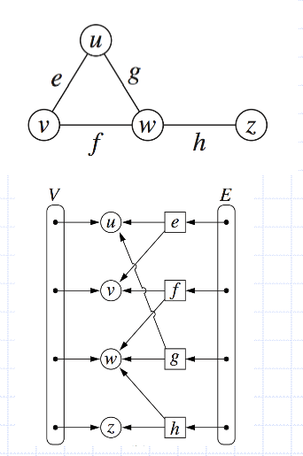
Adjacency List Structure
- Extends edge list
- Incidence sequence for each vertex
- sequence of references to edge objects of incident edges
- Augmented edge objects
- references to associated positions in incidence sequences of end vertices
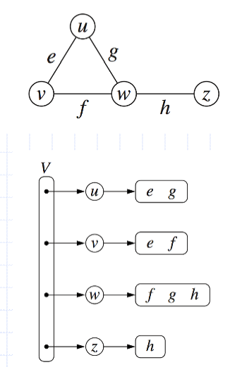
Adjacency Map Structure
- Adapts adjacency list
- Incidence list becomes a map
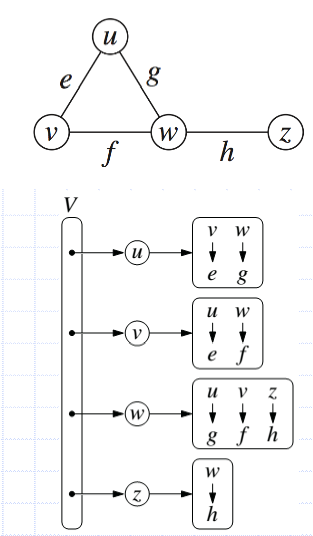
Adjacency Matrix structure
- Edge list structure
- Augmented vertex objects
- integer key (index) associated with vertex
- 2D-array adjacency matrix
- reference to edge object for adjacent vertices
- null for nonadjacent vertices
- “Old fashioned” version
- 0 for no edge
- 1 for edge
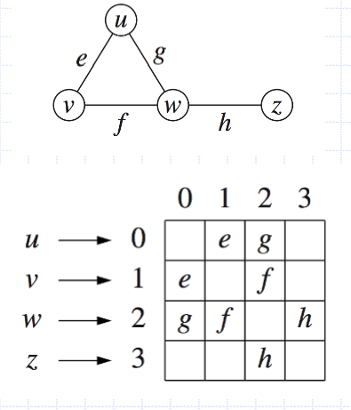
Performance table
| Edge list | Adjacency List | Adjacency Matrix | |
|---|---|---|---|
| Space | |||
outgoingEdges(v) |
m | deg() | |
incomingEdge(v) |
m | deg() | |
getEdge(v, w) |
m | min(deg(v), deg(w)) |
1 |
insertVertex(o) |
1 | 1 | |
insertEdge(v, w, o) |
1 | 1 | 1 |
removeVertex(v) |
m | deg(v) |
|
removeEdge(e) |
1 | 1 | 1 |
- number of vertices
- number of edges
Graph traversal
- Systematic process for exploring a graph
- visit all vertices and edges
- Efficient if done in linear time
- Allows determination of reachability
- how to travel from one vertex to another
Depth-First Seach (DFS)
- General technique for traversing a graph
- DFS traversal of a graph G :
- visits all the vertices and edges of G
- determines whether G is connected
- computes the connected components of G
- computes a spanning forest of G
Algorithm DFS(G, v):
Input Graph G and a vertex v of G
Output Collection of vertices reachable from v and their discovery edges and back edges
Mark vertex v as visited
for all e in G.outgoingEdges(v) do
if e is not explored then
w <- G.opposite(v, e)
if w has not been visited then
Record edge e as a discovery edge for vertex w
DFS(G, w)
else
Mark e as a back edge for vertex w
- dont want to go back to the original node, but I want to mark that I have visited and discovered this edge
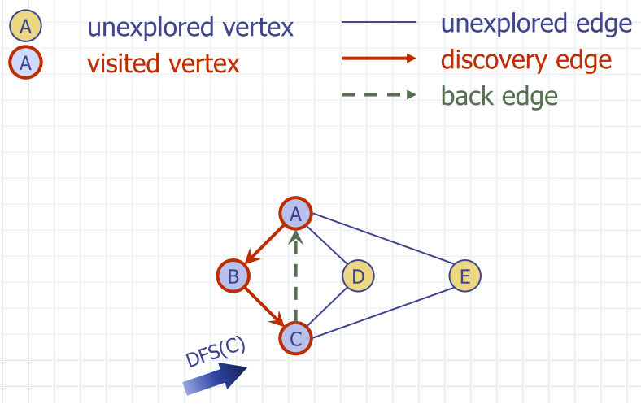
properties of DFS
- Property 1
- DFS(G, v) visits all the vertices and edges in the connected component of v
- Property 2
- Discovery edges labelled by DFS(G, v) form a spanning tree of the connected component of v
Analysis of DFS
- Setting/getting a vertex/edge label takes O(1) time
- Each vertex is labelled twice
- once as UNEXPLORED
- once as VISITED
- Each edge is labelled twice
- once as UNEXPLORED
- once as DISCOVERY or BACK
- Method outgoingEdges is called once for each vertex
- DFS runs in O(n + m) time
- provided graph is implemented as an adjacency list
- recall that
- provided graph is implemented as an adjacency list
Path Finding And Cycle Finding
- DFS can be modified to identify a path from one vertex to another
- can be used to identify cycles through backedges
DFS for entire graph
- Have to run DFS for all nodes on each subsequent run
Algorithm DFS(G):
Input Graph G
Output Labelling of edges of G as discovery and back edges
for all u is an element of G.vertices() do
Set u to be unvisited
for all e is an element of G.edges() do
Set e to be unexplored
for all v is an element of G.vertices() do
if v has not been visited then
DFS(G, v)
BFS Algorithm from a vertex
Algorithm BFS(G, u)
Input Graph G and a vertex u of G
Output Collection of vertices reachable from u and their discovery and cross edges
Q = new empty queue
Q.enqueue(u)
Mark vertex u as visited
while Q.isEmpty() do
v = Q.dequeue()
for all e in G.incidentEdges(v) do
if e is not explored then
w <- G.opposite(v, e)
if w has not been visited then
Record edge e as a discovery edge for vertex w
Q.enqueue(w)
Mark vertex w as visited
else
Mark e as a cross edge
Example
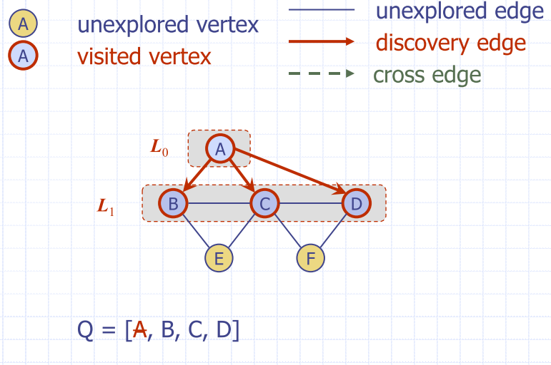
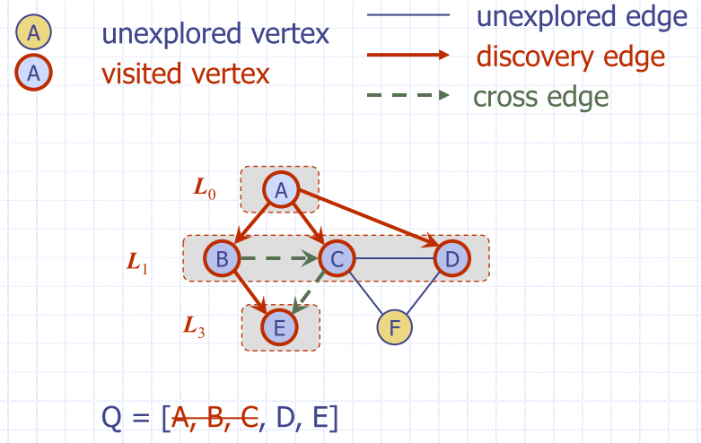
DFS vs. BFS
Back edge (v, w)
- w is an ancestor of v in the tree of discovery edges Cross edge (v, w)
- w is in the same level as v, or in the next level
BSF Properties
- Notation
- connected component of s
- Property 1
- visits all the vertices and edges of
- WILL ONLY VISIT ONE CONNECTED COMPONENT
- visits all the vertices and edges of
- Property 2
- Discovery edges labeled by form a spanning tree of
- Property 3
- For each vertex v in
- path of from s to v has i edges
- every path from s to v in has at least i edges
- For each vertex v in
Analysis of BFS
- Setting/getting a vertex/edge label takes O(1) time
- Each vertex is labelled twice
- once as UNEXPLORED
- once as VISITED
- Each edge is labelled twice
- once as UNEXPLORED
- once as DISCOVERY or CROSS
- Each vertex is inserted once into a sequence
- Method
outgoingEdgesis called once for each vertex - BFS runs in O(n + m) time
- provided graph is implemented as an adjacency list
- recall that
- provided graph is implemented as an adjacency list
Directed Graphs
- Graph whose edges are all directed
- “directed graph”
- Applications
- one-way streets
- flights
- task scheduling

- Graph whose edges are all directed
- “directed graph”
- Applications
- one-way streets
- flights
- task scheduling
Digraph Properties
- Graph G=(V,E) such that
- each edge goes in one direction
- edge (a,b) goes from a to b, but not b to a
- If G is simple
- If in-edges and out-edges are kept in separate adjacency lists
- can perform listing of incoming edges and outgoing edges in time proportional to their size
Digraph Application
Scheduling: edge (a,b) means task a must be completed before b can be started

Directed Graph Traversal
- Specialise (DFS & BFS) traversal algorithms for digraphs by traversing edges only along their direction
- Directed DFS algorithm has
four types of edges
- discovery edges
- back edges
- forward edges
- cross edges
- Directed DFS starting at vertex s determines the vertices reachable from s
Reachability
DFS tree rooted at vertex v
- vertices reachable from
vvia directed paths- e.g. if we take c, we can only go to e, to d, to a, to c as well
- given some vertex, which other ones can we get to?

Strong connectivity
- Reach a vertex from any given vertex
- If we can run of every node and we can get to every other node, then we are done
Strong Connectivity Algorithm
- Pick a vertex
vinG - Perform a DFS from
vinG- if there’s a w not visited, false
- Let
G’beGwith edges reversed - Perform a DFS from
vinG’- if there’s a
wnot visited, false - else, true
- if there’s a
- Running time:

DAGs and Topological Ordering
- Directed acyclic graph (DAG)
- digraph with no directed cycles
- Topological ordering of a digraph is a numbering of the vertices such that for every edge , we have
- Example: in a task scheduling digraph, a topological ordering of a task sequence that satisfies the precedence constraints
- Not one topological ordering for a graph
Theorem
A digraph has a topological ordering if and only if it is a DAG

Algorithim for Topological sorting
- Essentially, find the vertex with no outgoing edges, and label it the highest number. remove it from the graph and edges associated with it
Algorithm TopologicalSort(G):
H <- G // Temporary copy of G
n <- G.numVertices()
while H is not empty do
Let v be a vertex with no outgoing edges
Label v <- n
n <- n - 1
Remove v from H
Topological sorting with DFS
Algorithm topologicalDFS(G)
Input dag G
Output topological ordering of G
n <- G.numVertices()
for all u in G.vertices() do
Set u to be unvisited
for all v in G.vertices() do
if v has not been visited then
topologicalDFS(G, v)
Algorithm topologicalDFS(G, v)
Input graph G and a start vertex v of G
Output labeling of the vertices of G in the connected component of v
#Mark vertex v as visited
for all e in G.outgoingEdges(v) do
w <- G.opposite(v, e)
if w has not been visited then
{ e is a discovery edge }
topologicalDFS(G, w)
else
{ e is a forward or cross edge }
#Label v with topological number n
n <- n - 1